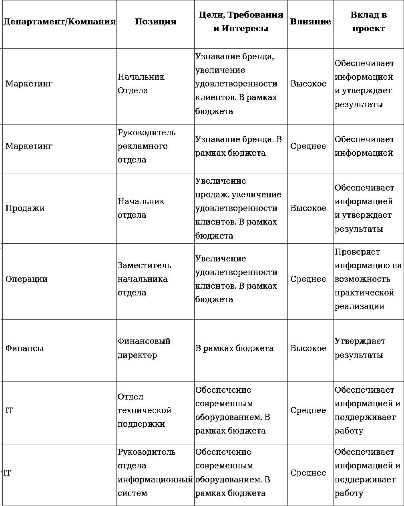
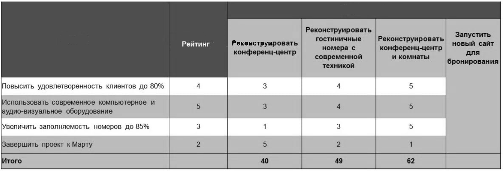

Назаров С.В. Архитектуры и проектирование программных систем: моно графия /С.В. Назаров. — М.: ИНФРА-М, 2013
За более чем шестидесятилетнюю эволюцию аппаратное обеспечениекомпьютеров достигло небывалого прогресса. Эмпирическое наблюдение, сделанное Г. Муром в 1965 году, в современной трактовке говоритоб удвоении производительности компьютеров каждые два года. Современному специалисту доступна такая вычислительнаямощность, которую 10 – 15 лет назад имели немногие научные учреждения.
Так ли это? Справедливо ли измерять производительость в тактах и байтах?
Автоматизированная система vs Программное обеспечение
программа решает одну или несколько связанных прикладных задач, зачастую сначала не имеющих четкой постановки, настолько важных для каких-либо лиц или организаций, что те приобретают значимые выгоды от ее использования;
программа не предназначена для решения каких-либо прикладных задач, но от нее зависит эффективное решение этих прикладных задач. Это системные программы, например, операционные системы, системы управления базами данных, различные инструментальные системы и т.п.;
существенно, чтобы программа была удобной в использовании. В частности, она должна включать достаточно полную и понятную пользователям документацию, возможно, также специальную документацию для администраторов, а также набор документов для обучения работе с программой;
программа должна обладать высокой производительностью, высокой реактивностью или удовлетворять другим требованиям, в противном случае ее использование по назначению (на реальных данных) может привести к значимым для пользователей потерям;
программа должна обладать высокой надежностью. Неправильная работа программы может нанести ощутимый ущерб пользователям и другим организациям и лицам, даже если сбои происходят не слишком часто;
для выполнения своих задач программа должна удовлетворять требованиям совместимости, переносимости и интеграции с другими программами и программно-аппаратными системами и обеспечивать работу на разных платформах;
пользователи, работающие с программой, могут приобретать дополнительные выгоды от того, что программа развивается, в нее вносятся новые функции и устраняются ошибки. Поэтому необходимо наличие проектной документации, позволяющей развивать ее, возможно, вовсе не тем разработчикам, которые ее создавали, без больших затрат на обратную разработку (реинжиниринг);
в разработку программы вовлечено значительное количество людей (десятки и сотни человек). Большую программу практически невозможно написать с первой попытки, с небольшими усилиями и в одиночку;
большая программа имеет намного большее количество ее возможных пользователей по сравнению с небольшими программами, и еще больше тех лиц, деятельность которых будет так или иначе затронута ее работой и результатами.
Проблемы создания программных систем следуют из их свойств и именно из их сложности. Современные крупномасштабные проекты ПС характеризуются следующими особенностями:
структурной сложностью (многоуровневой иерархической структурной организацией) и территориальной распределенностью;
функциональной сложностью (многоуровневой иерархией и большим количеством функций, сложными взаимосвязями между ними);
информационной сложностью, большим количеством источников и потребителей информации, разнообразными формами и форматами представления информации, сложной технологией прохождения документов др.;
большим количеством внешних систем различных организаций с разными форматами обмена информацией; высокой технической сложностью, определяемой наличием совокупности тесно взаимодействующих подсистем (компонентов), имеющих свои локальные задачи и цели функционирования;
сложной динамикой поведения, обусловленной высокой изменчивостью внешней (изменения в законодательных и нормативных актах, нестабильность экономики и политики) и внутренней среды (структурная реорганизация, текучесть кадров и др.);
отсутствием полных аналогов, ограничивающих возможность использования каких-либо типовых проектных решений и прикладных систем, высокой долей вновь разрабатываемых программ.
Hекоторые наиболее характерные виды современного программного обеспечения: (https://intuit.ru/studies/courses/2314/614/lecture/13316)
(https://upravlenie-proektami.ru/initciatciia-proekta)
Инициация проекта – это стадия проекта, на которой выполняется определенный набор работ для его успешного запуска. В частности, происходит четкое определение целей и задач проекта, назначение руководителя проекта, разработка устава, идентификация участников и заинтересованных лиц.
Очень, очень часто этот этап жизненного цикла проекта начинающему руководителю проекта кажется неважным и ненужным. Действительно, о чем тут думать, начальство сказало делать – значит, надо делать. Скорее бежать планировать, например, а то и сразу выполнять. И это одна из самых больших ошибок, какую только можно сделать.
Что именно происходит на этапе инициации проекта в конкретной компании, чаще всего зависит от самой компании. Где-то решение о том, что “проекту быть” уже принято, и нужно только подготовить устав, а где-то именно на этом этапе происходит оценка целесообразности проекта и принимается решение после подготовки устава. Но в любом случае, это та контрольная точка, после которой будет понятно, делаем мы проект или нет, и которая позволяет формально этот проект начать.
Если обобщить, то инициация проекта – это момент, когда еще можно остановиться и подумать, а делать ли проект вообще? Когда еще не затрачены деньги, время и усилия. Когда вашей репутации хорошего руководителя проектов еще не нанесен урон, который потом будет сложно исправить. После того, как устав подписан, а руководитель проекта назначен, что-то решать уже поздно.
Что бы не входило в инициацию проекта в вашей компании, на этом этапе необходимо четко сформулировать и описать основную информацию о проекте, сделать обоснование его целесообразности, описать конечный продукт и результаты проекта. То есть формализовать всю информацию, которая позволит понять, а нужно ли его вообще делать, этот проект. Важно понимать, что причин инициации проекта может быть всего три: сокращение расходов, увеличение прибыли, снижение рисков.
Также стадия инициации проекта – это возможность сделать так, чтобы основные заинтересованные лица понимали, о чем этот проект вообще и какую роль они в нем будут выполнять, не обольщались тем, что вы все сделаете идеально и придете с готовым результатом, и осознали, что чуда не будет, и им тоже придется в этом участвовать.
Вся перечисленная информация кратко фиксируется в уставе проекта, который обычно содержит не более двух-трех страниц. Как написать хороший устав проекта. Устав является первым документом, официально «запускающим» проект, а также определяющим руководителя проекта.
Так же советую даже в наш век высоких технологий, когда распечатанные документы уже не так популярны и намного проще согласовывать устав проекта через электронную почту, все же хранить у себя распечатанный и подписанный устав. Так надежнее, ну и важность любой бумажки при подписании автоматически повышается в разы.
Как расценивается инициация проекта с позиции менеджера проекта? С точки зрения профессиональной этики именно на этапе инициации он должен честно ответить себе на вопрос, можно ли этот проект сделать в рамках имеющих ограничений по времени, деньгам, ресурсам и проч.? Если уже сейчас понятно, что нельзя, самое время поднять руку и с цифрами в руках объяснить, почему нельзя. Помните, подписывая устав, вы берете на себя профессиональную ответственность за выполнение того, что в нем указано в рамках тех ограничений, которые там указаны, и с этого момент неуспех проекта – это ваш личный неуспех.
Крайне желательно именно здесь, на берегу, договориться о том, что от вас ждут, как от руководителя проекта, какие полномочия у вас будут, и как будут измеряться результаты. Это не всегда можно внести в устав, но нужно хотя проговорить этот вопрос со спонсором, чтобы не осталось недопонимания.
Итак, я живу в квартире уже 15 лет, краска на потолке облупилась, батареи старые и вообще мне некомфортно. И я думаю, что неплохо бы затеять проект “Ремонт в квартире”. Как это будет происходить?
Первым делом я честно отвечаю себе на вопрос “зачем?” и “чего я хочу этим ремонтом достичь”. Не просто “хочу ремонт”, а “чтобы приходить домой, а тут красота и порядок, тогда мне будет психологически комфортнее, а то сейчас у меня прям депрессия сразу начинается”. Или “чтобы через год продавать квартиру, с ремонтом будет выгоднее и продастся быстрее. Или “чтобы старые проводка и трубы не подвели, а то со дня на день залью соседей или пожар будет, всю жизнь потом выплачивать”. Чем более честно я отвечу сейчас, чем проще будет потом. На этом же этапе я спрашиваю других заинтересованных лиц (например, мужа), хотят ли они ремонт, и чего они от него ждут.
Дальше я хотя бы примерно определяю, могу я себе это позволить или нет – смотрю на свои депозиты, прикидываю, сколько это все будет стоить, соотношу количества потраченных денег с получаемой выгодой (если квартира с ремонтом подорожает на 1 млн., а в ремонт нужно вложить 2 млн. – то нафиг такой проект). Решаю, делать вообще проект или нет. Если нет, то забываю о нем или смотрю, какие альтернативы у меня есть (например, сделать чисто косметический ремонт за 200 тыс. рублей, чтобы квартира на фото в объявлении хорошо смотрелась, а коммуникации не менять, все равно никто не узнает, что они плохие).
Если решено, что делать надо – думаю, какие есть ограничения по срокам (на время ремонта пустят пожить родители, но не больше чем на 4 месяца, потом к ним брат с женой приедут), по деньгам (надо уложиться в 1,5 млн. вместе с мебелью и кухней), по ресурсам (кто будет делать, сами или фирму какую-нибудь возьмем). А еще думаю, кого этот проект затронет, и не нужно ли его с ними тоже согласовать (например, местный ЖЭК как раз через пару месяцев планировал замену общих коммуникаций, чтоб не вышло, что они весь мой ремонт разнесут), и в каком окружении он будет проходить (в городе нет ни одного магазина стройматериалов, придется все из соседнего города возить).
Решаю, кто будет руководить всем этим процессом и какие у него/нее будут полномочия. Если это буду я – договариваюсь с мужем, что все покупки более 50 000 руб. буду согласовывать с ним (все, что мельче – разбираюсь сама), и что могу рассчитывать, что минимум 3 дня в неделю я могу от него требовать, чтобы он занимался ремонтом.
Целью инициации проекта является получение обязательства начать проект. Вы хотите, чтобы клиент или спонсор могли принять обоснованное решение о переходе на этап планирования.
Как правило, первым шагом в инициации проекта является назначение менеджера проекта. В некоторых случаях руководитель проекта может быть назначен в проект после его утверждения.
Во время инициации проекта вы определяете проблему, которую должен решить проект, и собираете всю сопутствующую информацию. Как только у вас есть первоначальное определение проекта, пришло время подготовить устав проекта, документ, который формально описывает проект и излагает полномочия менеджера проекта.
В этой главе мы рассмотрим ключевые элементы определения проекта и что входит в устав проекта на стадии его инициации.
Термин «заинтересованная сторона» означает конкретного человека или группу людей, которые заинтересованы в результатах проекта. Это может быть клиент, отделы, влияющие на проект, и даже люди, которые работают над задачами проекта.
Для руководителя проекта необходимо знать важность, влияние и заинтересованность заинтересованных сторон в проекте. Вам также необходимо знать их ожидания и вклад в проект. Таким образом, вы, как руководитель проекта, можете сосредоточиться на построении отношений с заинтересованными сторонами, которые оказывают наибольшее влияние на успех проекта.
Давайте рассмотрим основные виды заинтересованных сторон:
Иногда бывает сложно определить, кто является заинтересованными сторонами для вашего проекта, а также оценить, какие из них наиболее важны, и как эффективно с ними работать. Вот где пригодится документ анализа заинтересованных сторон или реестр заинтересованных сторон.
Во-первых, вам нужно знать, как ваши заинтересованные стороны связаны с вашим проектом и что их мотивирует. Начните с включения отдела, бизнес-единицы или компании, к которой принадлежит заинтересованная сторона, и их должности в организации.
Затем определите, кого заинтересованная сторона слушает. Это поможет вам, если будет необходимость выяснить, как решить проблему с заинтересованной стороной.
Определите цели проекта, о которых заботится заинтересованная сторона, и их приоритет. Таким образом, вы знаете, с кем поговорить, если с этой целью возникнут проблемы.
Категоризируйте каждого участника по его влиянию и интересу к проекту. Таким образом, вы можете расставить приоритеты для каждой заинтересованной стороны, чтобы вы могли эффективно распределять свое время на управление им.
Наконец, документируйте вклад заинтересованных сторон в проект, чтобы вы знали, чего ожидать от них или к кому обратиться в будущем. Вы можете использовать таблицу, которую мы предоставили ниже.

Заинтересованные стороны имеют решающее значение для успеха вашего проекта. Как руководитель проекта, вы должны знать, что заставляет их активно участвовать в проекте, как они могут помочь и как вы можете удовлетворить их запросы.
Мы определили проект как временное усилие с уникальной целью. Эта цель состоит в том, чтобы достичь чего-то, например, решить проблему или воспользоваться возможностью. Цель проекта определяет каждое решение в проекте, поэтому необходимо убедиться, что вы правильно описали основную проблему или возможность.
Вы делаете это с помощью постановки задач. Формулировка проблемы четко определяет проблему, которую вы пытаетесь решить, или возможность, которой вы хотите воспользоваться. Не стоит использовать множество слов для определения задачи. Если вы можете поместить это в одно предложение, тем лучше.
Определение задачи может быть проблемой, потому что люди часто переходят прямо к решениям. Решения описывают конечный результат, а не исходную мотивацию. Например, конечные результаты могут быть «нам нужно новое здание», «нам нужен новый сайт» или «нам нужен новый склад». Это не проблемы, а решения.
Один из способов отказаться от решения первоначальной проблемы – спросить «Зачем». Зачем нам новое здание? Зачем нам нужен новый сайт? Зачем нам новый склад? Задавайте вопрос «Зачем» по несколько раз.
Вы можете использовать ответы, чтобы докопаться до сути проблемы и начать раскрывать более конкретные цели проекта. Задача будет заключаться в том, что «мы теряем долю рынка» на растущем рынке, «нам некуда определить новую производственную линию» и т.д.
После того как вы узнали проблему, необходимо определить, чего должен достичь проект. То есть цель проекта. Цель проекта – это цель, которая определяет конечный результат. Целью должно быть простое утверждение, понятное каждому. Цель можно также сформулировать путем уточнения деталей.
Определение целей довольно важная часть работы по планированию проекта, так как помогает узнать scope проекта смотрите предыдущую главу), ваш подход и критерии успеха, которым вы должны соответствовать.
Теперь, когда мы обсудили несколько категорий задач, давайте поговорим о том, как правильно документировать цели. Одним из способов определения четких целей является использование критериев SMRT. * Конкретные (Specific) цели всегда для всех понятны, поэтому нет недопонимания относительно того, чего вы должны достичь. Например, повысить рейтинг одобрения клиентов до 80%. * Измеримые (Measurable) цели устраняют любой вопрос относительно того, были ли они достигнуты. Например, вы можете использовать рейтинги с онлайн-сайтов для измерения удовлетворенности клиентов. * Реалистичные (Realistic) цели объясняют, что вы можете сделать с доступными ресурсами. Сложные цели могут мотивировать людей, но ваша команда может сдаться, если считает, что достижение цели является невозможным. * Временные рамки (Time related). Цель должна иметь четкую дату. Например, проект конференц-центра должен быть завершен в марте.
Теперь, когда цели и задачи проекта определены, вы работаете с соответствующими заинтересованными сторонами для проведения анализа выгод. Таким образом, вы можете проверить, что проект соответствует миссии и стратегии организации и обеспечивает ожидаемую ценность для бизнеса.
Как только вы определили цель и задачи проекта, вы, вероятно, обнаружите, что есть более чем один способ их достижения. Давайте рассмотрим, как вы можете оценить альтернативные стратегии и выбрать правильное решение.
Во-первых, соберите небольшую группу людей, знакомых с проектом, чтобы выработать возможные стратегии. Эта группа должна ознакомиться с целями и задачами, а затем приступить к выработке возможных стратегий. Группа должна провести мозговой штурм и определить несколько рабочих идей.
Цель здесь такая же, как и в нашей статье остратегическом планировании – записать как можно больше идей, прежде чем вы начнете их оценивать или критиковать. После того как вы записали несколько стратегий, вам необходимо оценить их.
Вы можете использовать матрицу решений, чтобы сравнить ваши варианты. Группа должна спросить, насколько хорошо эта стратегия соответствует целям проекта? Одним из способов быстрого сокращения списка претендентов является проверка того, удовлетворяет ли стратегия всем необходимым задачам. Если стратегия не удовлетворяет одному из ваших обязательных требований, вам не нужно заполнять остальные значения для этой стратегии.

Затем оцените производительность для каждой цели. Если некоторые цели важнее других, вы можете увеличить их вес. Стратегия с самым высоким общим рейтингом, скорее всего, ваш победитель.
Во-вторых, группа должна спросить, рабочая ли эта стратегия? Стратегии, которые используют новые технологии или недоказанные методы, могут не работать.
В-третьих, узнайте, какие риски возможны в применении данной стратегии? Вы можете не знать всех рисков на этом этапе проекта, но вы можете выполнить их первоначальный анализ, чтобы увидеть, являются ли какие-либо риски настолько значительными и вероятными, что вы не сможете продолжать проект.
В-четвертых, спросите, соответствует ли эта стратегия культуре организации? Попытка выработать стратегию, которая не соответствует культуре, является заранее проигрышной.
Попробуйте использовать Матрицу решений, чтобы оценить стратегии для вашего текущего проекта. Помните, что выбранная вами стратегия должна удовлетворять большинству, если не всем, целям проекта. Как только вы выберете решение из альтернативных стратегий, детали вашего проекта начнут становиться на свои места.
Требования содержат подробную информацию о том, каким должен быть результат, и функции, которые он должен иметь. Они описывают конкретные потребности проекта. Правильное определение требований жизненно важно, потому что, если вы не определите истинные требования проекта, заинтересованные стороны не будут удовлетворены результатами проекта, и если вы включите требования, в которых нет необходимости, проект, вероятно, займет больше времени, и понесет больше затрат, чем требуется.
Разработка требований является сложной задачей по нескольким причинам. Заинтересованные стороны могут неправильно описывать свои требования или предоставлять противоречивые запросы. Они могут опускать требования, в которых действительно нуждаются. Кроме того, заинтересованные стороны часто отказываются выделять время, необходимое для определения требований.
Первым шагом в разработке требований является сбор информации о том, что требуется. Есть несколько методов для сбора требований. Интервью – отличный способ поиска информации. Ключ в том, чтобы выбрать правильных людей для интервью и подготовить список вопросов. Если в вашем проекте участвуют несколько групп, вы можете провести мозговой штурм, чтобы обсудить их требования к проекту.
Другой подход – понаблюдать, как работают люди. Другими словами, следите за тем, что люди делают в своей повседневной деятельности. Чтобы убедиться, что вы правильно поняли требования, запишите их и рассмотрите с работниками.
Анкеты и опросы являются еще одним способом получения требований от заинтересованных сторон. Важно тщательно их составлять, чтобы не влиять на полученные ответы. Если уже существует какая-то документация проекта с предварительными результатами, вы можете получить требования, проанализировав ее.
После того как вы собрали первоначальные данные, вам нужно проанализировать их и убедиться, что они имеют смысл. Скорее всего, вы обнаружите, что у вас нет всей необходимой информации или что требования повторяются и противоречивы. Требуются несколько подходов, чтобы получить конкретные требования проекта.
Чтобы определить, будут ли результаты проекта такими, какими вы их задумали, необходимо каким-то образом измерить их. Эти измерения называются критериями успеха. Результаты могут быть материальными, например, здание, новый продукт или новая услуга. В других случаях результаты более абстрактны, как финансовый результат, скажем, увеличение продаж на 15%.
Как только ваш проект начнется, результаты помогут вам измерить прогресс. Чтобы задокументировать ваши результаты, начните с записи конечных результатов. То есть, результаты, которые предусматривает ваш проект.
Далее документируйте промежуточные результаты. Это события или результаты, полученные в ходе проекта. Имейте в виду, что заказчик проекта необязательно получает промежуточные результаты.
По возможности старайтесь определять результаты, которые могут быть достигнуты в сроки между отчетами о состоянии проекта. Таким образом, вы можете оценить прогресс на основе результатов, достигнутых со времени последнего отчета.
Когда вы определились с результатами, как вы поймете, что результаты, которые вы по факту получаете, это те, что вы планировали? Для этого вам нужны количественные критерии, которые вы можете измерить.
Критерии успеха – это обозначение успеха. Некоторые из них легко понять, например, подписанные контракты с поставщиками или свидетельство о владении недвижимостью. Другие критерии не так просты и могут быть субъективными. Определяйте для себя те критерии успеха, которые понятны и поддаются количественной оценке.
Конечным результатом стадии инициации является официальное разрешение на проект. Оно выступает в виде устава проекта. Вот что обычно входит в устав проекта:
Вы можете задаться вопросом, почему Устав проекта описывает полномочия руководителя проекта. Это потому что у менеджера проекта нет той власти, которую имеют менеджеры в структурированной организации. Полномочия руководителя проекта сохраняются до тех пор, пока он управляет проектами, и применяются только к этим проектам.
Когда Устав проекта готов к исполнению, спонсор проекта распространяет его среди всех, кто каким-либо образом вовлечен в проект. Ваши полномочия как руководителя проекта станут общеизвестными, и вы готовы приступить к планированию проекта.
С понятием “архитектура” каждый знаком еще со времени обучения в школе. Слово “архитектура” по своей форме латинское (architectura), хотя и происходит от греческих корней αρχι и τεκτονική, что значит высшее плотничное или строительное искусство. В этом смысле слову “архитектура” придавали очень обширное значение. Так, например, были в ходу выражения “военная архитектура”, “корабельная архитектура”, “гидротехническая архитектура”, “ландшафтная архитектура” и т. д. В настоящее время под словом “архитектура” чаще всего понимается искусство градостроения, проектирования зданий и сооружений, предназначенных для помещения людей, животных или каких-либо предметов.
В начале развития информационных технологий термин “архитектура” применялся только к аппаратному обеспечению (архитектура ЭВМ, вычислительных комплексов, сетей и др.) и лишь позже стал применяться к программному обеспечению. В настоящее время дисциплина программных архитектур и их проектирования интенсивно развивается. В любой методологии проектирования ПС (пожалуй, кроме экстремального программирования) понятие архитектура занимает ключевое место.
У понятия архитектура в его применении к программному обеспечению и системам, базирующимся на ПО, достаточно долгая жизнь. Начало этой «жизни» принято связывать с именами Э. Дейкстры, Ф. Брукса и Д. Парнаса, заложивших основы структурного и объектно-ориентированного программирования. Но «отсчет» современного значения этого понятия принято начинать с 1992 года с работы Д. Перри и А. Вульфа. Когда речь заходит об архитектуре, обычно не возникает недостатка в определениях.
По стандарту IEEE Std 1472000 и IEEE 1471 “Рекомендуемые методы описания архитектуры преимущественно-программных систем” дается такое определение архитектуры: “Архитектура – это базовая организации системы, воплощенная в ее компонентах, их отношениях между собой и с окружением, а также принципы, определяющие проектирование и развитие системы”. Стандарт IEEE 1471 определяет также представление архитектуры (architectural description) как согласованный набор документов, описывающий архитектуру с точки зрения определенной группы заинтересованных лиц с помощью набора моделей. Архитектура может иметь несколько представлений, отражающих интересы различных групп заинтересованных лиц.
Стандарт рекомендует для каждого представления фиксировать отраженные в нем взгляды и интересы, роли лиц, которые заинтересованы в таком взгляде на систему, причины, обуславливающие необходимость такого рассмотрения системы, несоответствия между элементами одного представления или между различными представлениями, а также различную служебную информацию об источниках информации, датах создания документов и пр.
Стандарт IEEE 1471 отмечает необходимость использования архитектуры системы для решения следующих задач: 1. Анализ альтернативных проектов системы. 2. Планирование перепроектирования системы, внесения изменений в ее организацию. 3. Общение по поводу системы между различными организациями, вовлеченными в ее разработку, эксплуатацию, сопровождение, приобретающими систему или продающими ее. 4. Выработка критериев приемки системы при ее сдаче в эксплуатацию. 5. Разработка документации по ее использованию и сопровождению, включая обучающие и маркетинговые материалы. 6. Проектирование и разработка отдельных элементов системы. 7. Сопровождение, эксплуатация, управление конфигурациями и внесение изменений и поправок. 8. Планирование бюджета и использования других ресурсов в проектах, связанных с разработкой, сопровождением или эксплуатацией системы. 9. Проведение обзоров, анализ и оценка качества системы.
В стандартах IEEE Std 1472000 и IEEE 1471 определяются также следующие термины, связанные с определением архитектуры. Система – это набор компонентов, объединенных для выполнения определенной функции или набора функций. Термин “система” охватывает отдельные приложения, системы в традиционном смысле, подсистемы, системы систем, линейки продуктов, семейства продуктов, целые корпорации и другие агрегации, имеющие отношение к данной теме.
Система существует для выполнения одной или более миссий в своем окружении (IEEE 1471). Здесь несколько терминов, которые следует пояснить. Окружение, или контекст, определяет ход и обстоятельства экономических, эксплуатационных, политических и других влияний на систему.
Миссия – это применение или действие, для которого одно или несколько заинтересованных лиц планируют использовать систему в соответствии с некоторым набором условий.
Заинтересованное лицо – это физическое лицо, группа или организация (или ее категории), которые заинтересованы в системе или имеют связанные с ней задачи.
Говоря об архитектуре программных систем, прежде всего надо определить понятие “программная система”. Распространено такое определение: “ Программная система – это совокупность системных, прикладных и сервисных программ, обеспечивающих решение некоторой совокупности задач”.
Программные системы могут входить в состав программных комплексов. Обычно это более масштабные системы в рамках больших технических и организационных систем. Системы, в свою очередь могут состоять из подсистем. Архитектурные решения необходимы на каждом из этих уровней.
Любая система может рассматриваться с разных точек зрения: поведенческой (динамической), структурной (статической), логической (удовлетворение функциональным требованиям), физической (распределенность), реализации (как детали архитектуры представляются в коде) и т.п. В результате можно рассматривать получаем различные архитектурные представления (view). Архитектурное представление может быть определено, как частные аспекты программной архитектуры, рассматривающие специфические свойства программной системы. Классическим источником комплекса архитектурных точек зрения и представлений, построенных в системе координат “вопрос-уровень детализации” является модель Захмана. Каждое архитектурное представление является результатом ответа на вопрос (Как? Что? Где? и т.п.) в контексте необходимого уровня абстракции. Например, физическая модель данных (Physical Data Model) является ответом на вопрос “что?” в контексте технологической модели, а логическая модель данных, отвечая на тот же вопрос, находится на один уровень абстракции выше – в контексте системной или логической модели.
В информационных технологиях понятие архитектур используется в следующих областях:
функциональная архитектура (бизнес-архитектура);
системная архитектура (программных систем);
технологическая или инфраструктурная архитектура;
информационная архитектура (организация данных).
Следует отметить, что в определениях архитектуры часто употребляется слово “компонент”. Большая часть определений архитектуры не определяет термин “компонент”. Стандарт IEEE 1471 намеренно оставляет это понятие неопределенным, чтобы оно соответствовало множеству толкований, возможных в отрасли. Компонент может быть логическим или физическим, технологически-независимым или технологически-связанным, крупно- или мелкогранулированным. Определение термина "компонент" по спецификации UML 2.0 дается в достаточно широком смысле, что позволяет охватить различные элементы архитектуры:
Компонентом называется модульная часть системы, которая инкапсулирует ее содержимое; воплощение компонента является замещаемым в его окружении. Поведение компонента определяется в терминах предоставляемого и требуемого интерфейсов. Таким образом, компонент используется в качестве типа, соответствие которого описывается этими двумя интерфейсами, предоставляемым и требуемым (объединяя как статическую, так и динамическую их семантику).
Хотя в отрасли программного обеспечения не существует общепризнанного определения понятия "архитектура”, имеет смысл рассмотреть и другие определения, чтобы можно было установить сходство между ними. Рассмотрим следующие определения, в которых курсивом выделены основные характеристики термина в каждом отдельном определении.
Архитектура – это:
Архитектура программы или компьютерной системы - это структура или структуры системы, которые включают элементы программы, видимые извне свойства этих элементов и связи между ними.. Архитектура – это структура организации и связанное с ней поведение системы. Архитектуру можно рекурсивно разобрать на части, взаимодействующие посредством интерфейсов, связи, которые соединяют части, и условия сборки частей. Части, которые взаимодействуют через интерфейсы, включают классы, компоненты и подсистемы. Архитектура программного обеспечения системы или набора систем состоит из всех важных проектных решений по поводу структур программы и взаимодействий между этими структурами, которые составляют системы. Проектные решения обеспечивают желаемый набор свойств, которые должна поддерживать система, чтобы быть успешной.
Проектные решения предоставляют концептуальную основу для разработки системы, ее поддержки и обслуживания. В заключение приведем определение архитектуры программного обеспечения, данного в SWEBOK (Software Engineering Body of Knowledge) – документе, подготовленном комитетом Software Engineering Coordinating Committee, в который вовлечено сообщество IEEE Computer Society. Назначение SWEBOK – в объединении знаний по инженерии программного обеспечения (разработке программного обеспечения).
По SWEBOK в строгом значении архитектура программного обеспечения (software architecture) – описание подсистем и компонентов программной системы, а также связей между ними. Архитектура пытается 44определить внутреннюю структуру получаемой системы, задавая способ, которым система организована или конструируется. Хотя приведенные определения несколько отличаются, можно видеть немалую степень сходства. Например, большинство определений указывают на то, что архитектура связана со структурой и поведением, а также только со значимыми решениями, может соответствовать некоторому архитектурному стилю, на нее влияют заинтересованные в ней лица и ее окружение, она воплощает решения на основе логического обоснования.
Таким образом, можно видеть, что слова «архитектура программной системы» обычно довольно согласованно понимаются специалистами на уровне подсознания, и достаточно несогласованно определяются. По мнению Н. Михайловского, сложилось два основных класса определений архитектур – конструктивные и идеологические.
Основные идеологические определения архитектуры ПС таковы: 1. Архитектура ИС – это набор решений, наиболее существенным образом влияющих на совокупную стоимость владения системой. 2. Архитектура ИС – это набор ключевых решений, неизменных при изменении бизнес-технологии в рамках бизнес-видения.
Оба эти определения согласованы в том смысле, что если ключевое решение приходится изменять при изменении бизнес-технологии в рамках бизнес-видения, то резко возрастает стоимость владения системой. Следствием этих определений является понимание важности принятия архитектуры системы как стандарта предприятия, ввиду значимости архитектурных решений и их устойчивости по отношению к изменениям бизнес-технологии. Еще одно важное следствие первого определения – архитектура системы на самом деле должна строиться еще на стадии технико-экономического обоснования системы.
Конструктивно архитектура обычно определяется как набор ответов на следующие вопросы: